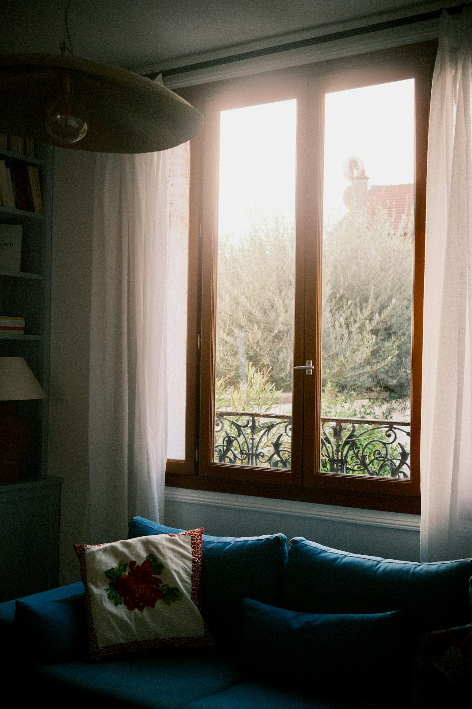

새결 매거진이 고른 이번 주 이야기


New Stories
이번 주에 올라온 이야기

PEOPLEMAKERS
나무 그늘을 설계하는 일
조경가 윤서해
새결하늘숲 중앙 정원을 설계한 조경가 윤서해를 만났다. 십 년 뒤 그늘의 크기를 먼저 그린다는 그의 작업 방식을 듣는다.

NOTESISSUE
집 안의 조명
월간 WITHIN H. 10월 특집
해가 짧아지는 10월, 집 안 조명을 다시 본다. 천장등을 끄고 스탠드 세 개로 거실을 밝힌 집들의 기록.

PEOPLENEIGHBORS
창가에서 시작하는 아침
새결하늘숲 정하윤 님
새결하늘숲에 입주한 지 두 해. 정하윤 님의 하루는 거실 창가 의자에서 시작한다. 커피 한 잔과 책 몇 쪽이 아침 일과다.

DAILYSEASON
단지에 온 가을
새결숲마루 산책로
은행나무 길이 노랗게 변하는 열흘. 새결숲마루 산책로를 따라 가을 풍경을 모았다.
PEOPLE
집을 짓고 사는 사람들
창가에서 시작하는 아침
새결하늘숲에 입주한 지 두 해. 정하윤 님의 하루는 거실 창가 의자에서 시작한다. 커피 한 잔과 책 몇 쪽이 아침 일과다.
DAILY
단지에서 보내는 하루
단지에 온 가을
은행나무 길이 노랗게 변하는 열흘. 새결숲마루 산책로를 따라 가을 풍경을 모았다.
NOTES
주거와 디자인 노트

머무는 집의 다섯 장면
사진에 잘 나오는 집과 오래 머물기 좋은 집은 다르다. 올해 인테리어 흐름을 다섯 가지 장면으로 정리했다.
PLACE
단지를 오래 보는 시선

강변 단지의 배치도
열네 개 동을 강 쪽으로 비스듬히 돌린 이유. 새결강변노을 배치도를 한 장씩 따라간다.